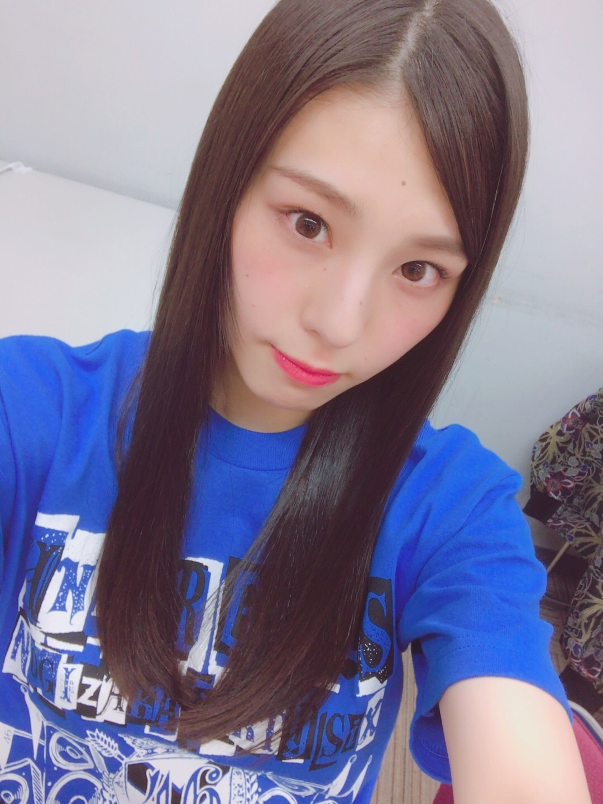
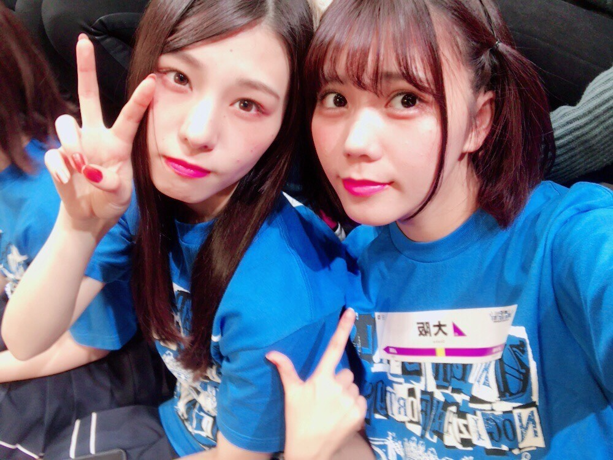
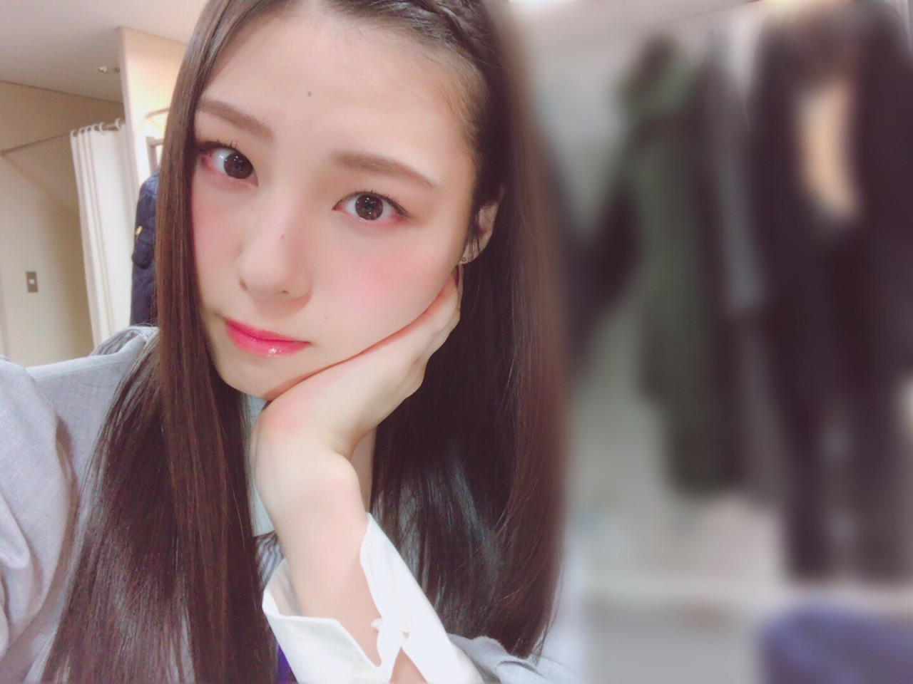
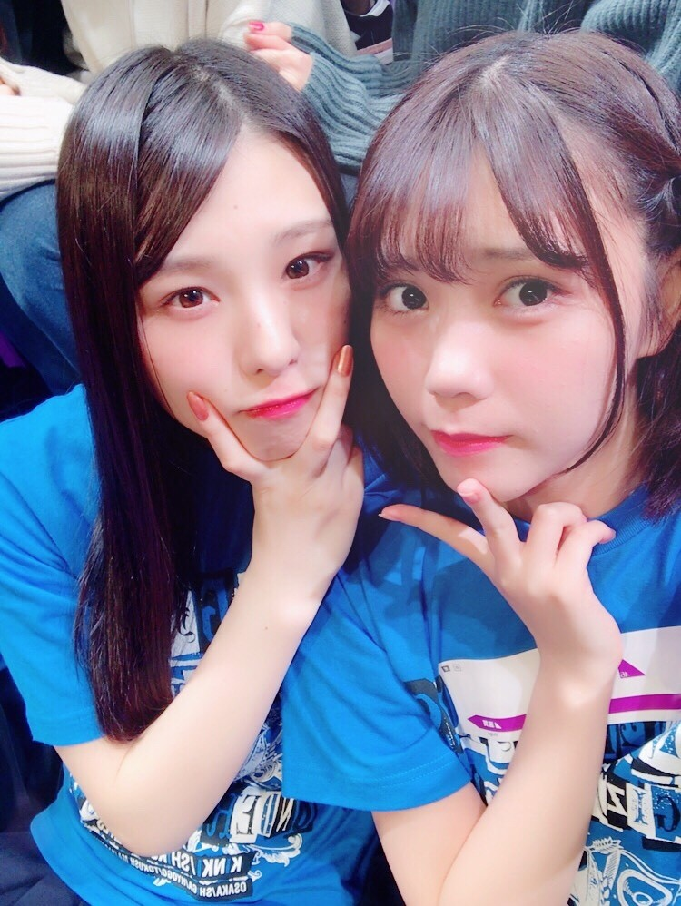
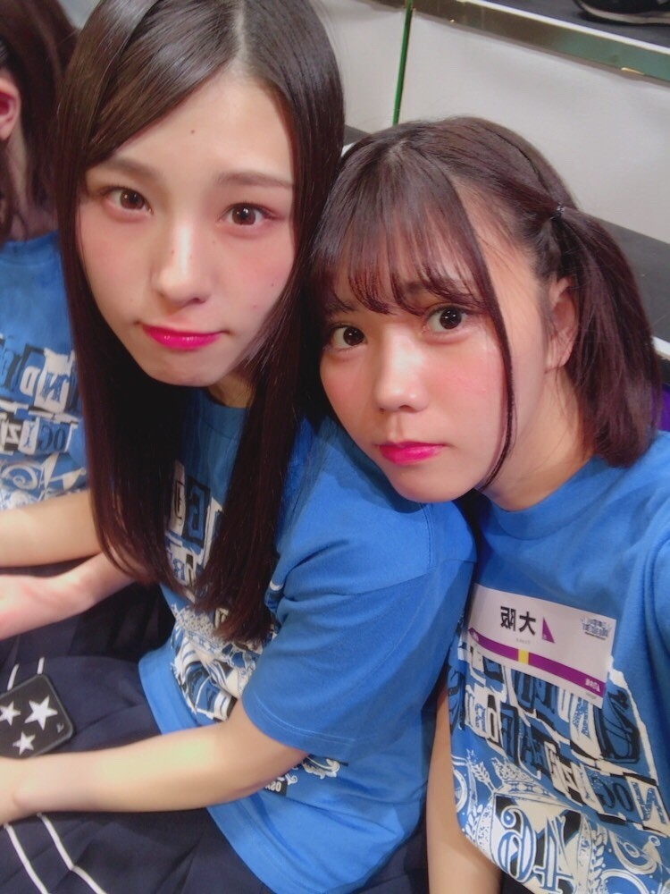

| 2017/12 20 Wed | i _(．．*)vol218 |
皆さんこんばんは
相楽伊織です

アンダーライブ近畿･四国地方
終わりました！
最後に明るいライブが出来て
よかったかなと思います(^^)
来て下さった皆さん
ありがとう♪
チケットを応募してくれた皆さんも
ありがとうございました！

大阪～
今回はご飯会にも割と参加して
楽しいツアーでした！
沢山美味しいもの食べられて幸せ！
天ぷらめっちゃ食べたし
海鮮も美味しかった
お蕎麦も鉄板焼きも
私にしては珍しくいっぱい食べた！
安納芋天ぷら美味しかった

おかげでほっぺたにオニクが付いた気がする。
移動はバスが多くて
疲れちゃうんだけど移動中に音楽聴いてるから
その時間があるの実は結構有難いんだ
音楽大好きだから
常に音楽聞いてたくて( ･×･)
この前も洋楽のCD5枚ネットで買っちゃった！
新しい音楽も好きだけど
最近は昔のヒット曲も結構聞いてるの～
いい歌に出会えた時の感動は
世界の絶景を見たときと同じくらいある！はず！
もちろん邦楽も大好き(*^^)

今回のツアーの2s
ほぼひなぴょんと
皆さん年末年始の予定は決まりましたか？
私は今年は何しようかな。
ブログあまり更新出来なくてすみません(_ _)

この青のライブTいいよね
i o r i .

コメント(391)
2017/12/20 18:45